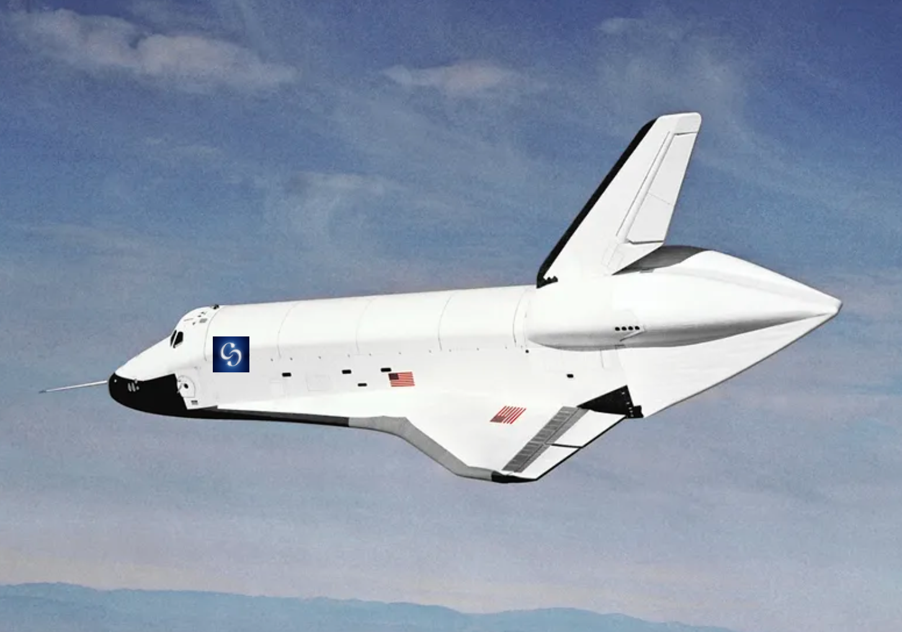

Cosmic Cruiselines
Home

At Cosmic Cruiselines, we are proud to offer our space tourists the
opportunity to travel to space on our state-of-the-art spacecraft, the
Celestial Voyager. The Celestial Voyager is a cutting-edge spacecraft
designed to provide a safe, comfortable, and unforgettable journey to
space.
The Celestial Voyager is a reusable spacecraft that is capable of carrying
up to six passengers and two pilots to low Earth orbit. The spacecraft is
approximately 12 meters long and 4 meters wide, and it is powered by a
combination of liquid oxygen and liquid hydrogen engines.
The spacecraft is equipped with a range of advanced technologies,
including a computer-controlled guidance and navigation system, a life
support system, and a thermal protection system. The life support system
is capable of providing oxygen, water, and food to the passengers during
their journey, while the thermal protection system ensures that the
spacecraft can withstand the extreme temperatures of space travel.
The spacecraft also features large windows that provide stunning views of
the Earth and the cosmos beyond. Passengers can enjoy a weightless
experience as they float around the cabin, taking in the incredible sights
and sensations of space travel.
The Celestial Voyager is designed to be both safe and environmentally
friendly. It uses non-toxic fuels and features a reusable design that
minimizes waste and reduces the environmental impact of space travel.
In summary, the Celestial Voyager is a cutting-edge spacecraft designed to
provide a safe, comfortable, and unforgettable journey to space for our
space tourists. With advanced technologies and a commitment to safety and
sustainability, the Celestial Voyager is the perfect spacecraft for the
adventure of a lifetime.